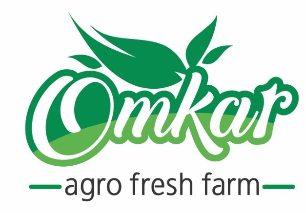

About Omkar Agro Fresh Farm
Omkar Agro Fresh Farm is a proudly Indian company dedicated to delivering pure, natural, and flavorful food ingredients to kitchens across the country and beyond. We specialize in the manufacturing of high-quality vegetable powders and authentic Indian masalas, using advanced dehydration and blending techniques that lock in taste, color, and nutrition—without any artificial additives. Rooted in farming traditions and powered by modern food technology, we process farm-fresh produce into ready-to-use powders and spice blends trusted by homes, hotels, and food brands alike.
At Omkar Agro Fresh Farm, our mission is to provide consumers with natural, healthy, and flavorful ingredients that enhance their culinary experiences. We are committed to sourcing the finest quality vegetables and spices directly from local farmers, ensuring that our products are free from artificial additives, preservatives, and harmful chemicals. Our goal is to promote a healthier lifestyle by offering convenient and delicious ways to incorporate more vegetables and authentic Indian flavors into everyday meals.
Quality: We uphold the highest standards of quality in every aspect of our operations, from sourcing to production and packaging. Sustainability: We are dedicated to sustainable farming practices that protect the environment and support local communities. Natural Ingredients: We use only natural ingredients, ensuring that our products are pure, wholesome, and full of flavor. Customer Satisfaction: We are committed to providing exceptional customer service and ensuring that our customers are delighted with our products.
We are passionate about preserving the traditional methods of spice blending while embracing modern technology to ensure consistency and quality. Our state-of-the-art facility adheres to strict hygiene and safety standards, and our products undergo rigorous quality checks at every stage of production. We believe in transparency and traceability, and we are proud to share the story of our ingredients and the journey they take from farm to table.